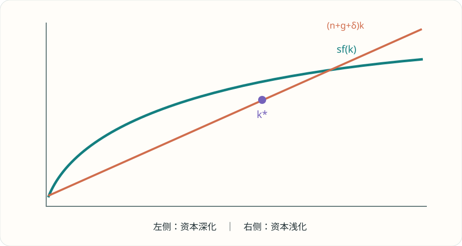
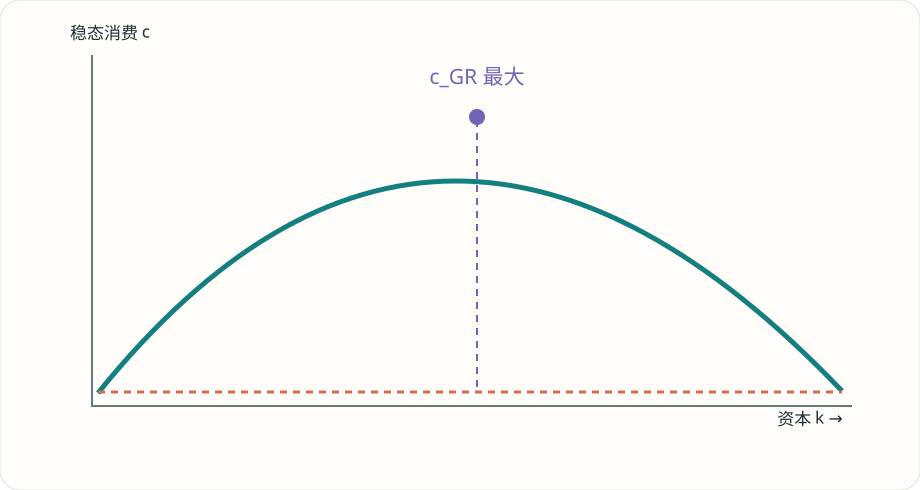

经济增长：索洛模型
为什么投资能提高生活水平，却不能单独保证人均收入永远加速增长？从有效劳动、资本动态、黄金律和增长核算拆解长期增长。
为什么持续投资不能让人均收入永远按同一速度增长？
把一国经济想成一条生产线：工人使用机器、厂房和基础设施生产商品。增加机器通常能提高每位工人的产出，但在工人数不变时，机器越多，再增加一台的边际贡献通常越小。资本深化能提高收入水平，却不一定持续提高人均收入增长率。索洛模型用一个清晰的资本积累方程，把这两个概念分开。
先把增长核算与模型推论区分开：生产函数是一个关于投入和产出的结构假设；资本积累方程是存量流量关系；储蓄率提高后稳态收入上升，是模型的比较静态结论；某个国家未来必然达到某个收入水平，则不是这几条公式能够直接证明的。
为什么要把资本除以“有效劳动”？
令 (K_t) 为资本存量、(L_t) 为劳动人数、(A_t) 为劳动增效型技术水平。使用 Cobb–Douglas 生产函数：
如果只除以劳动人数，技术进步仍会让人均产出增长。为了观察资本积累本身是否已经走到稳态，定义每单位有效劳动的资本和产出：
假设劳动人数以速率 n 增长，技术以速率 g 增长，资本折旧率为 δ。资本存量的变化率是投资减折旧。由于有效劳动本身也以约 n+g 的速度扩张，新增投资不仅要替换损耗资本，还要为新增有效劳动配备资本。
稳态资本为什么取决于储蓄、折旧、人口和技术增长？
令储蓄率为 s，假设储蓄转化为投资，且忽略政府、外部部门和资本调整成本。每单位有效劳动资本的连续时间动态为：
稳态 (k^*) 满足 (dot k=0)。若 (f(k)=k^α)，则：
当 k 低于稳态时，投资超过广化投资，k 上升；当 k 高于稳态时，维持资本深度所需的投资超过实际投资，k 下降。边际产出递减使经济向稳态靠近，而不是无限加速。稳态并非总量停止增长：在平衡增长路径上，总产出约按 n+g 增长，人均产出约按 g 增长。

资本越多，稳态消费一定越高吗？
政策目标通常不是把资本存量推到最大，而是考虑居民能消费多少。每单位有效劳动的稳态消费为：
对 k 求导，消费最大点满足黄金律条件：
在 Cobb–Douglas 生产函数下，黄金律储蓄率为 (s_GR=α)。若实际储蓄率高于黄金律水平，经济可能处于动态无效率区间：减少资本积累可提高稳态消费。但从高储蓄路径切换到低储蓄路径时，过渡期消费可能先变化，不能把稳态比较静态误读成“每个时期都立即更富裕”。

索洛残差究竟测量了什么？
增长核算把产出增长拆成投入增长与一个未被投入增长解释的余项。在规模报酬不变、竞争性要素定价等条件下：
TFP 不是直接观测到的一台机器或一项专利。它是扣除资本与劳动投入贡献后计算的残差，可能包含技术改进，也可能包含资源重新配置、产能利用率、劳动质量、资本质量、规模效应和统计测量误差。若资本服务或劳动技能没有测准，遗漏部分也会进入 TFP。
因此，不能把某一时期的 TFP 残差直接等同于“纯技术进步”，更不能在没有可追溯数据、资本存量口径、工时和劳动质量调整的情况下，把它写成某国固定比例的增长贡献。
穷国是否必然比富国增长得快？
索洛模型预测的是条件趋同：若两个经济体具有相同的储蓄率、人口增长、技术进步、折旧和生产结构，初始资本较低的经济体通常会向自己的稳态靠近得更快。它并不预测所有贫穷国家无条件追上所有富裕国家，因为它们可能有不同的稳态决定因素。
Mankiw、Romer 和 Weil 对扩展索洛模型的跨国检验，将人力资本纳入后发现模型能够解释相当一部分收入差异，并报告在控制储蓄与人口增长后存在条件趋同。这是一项特定样本和模型设定下的经验结果，不等于所有国家、所有时期都遵循同一收敛速度。
交互实验：储蓄率变化如何改变稳态与黄金律？
以下是连续时间 Cobb–Douglas 索洛模型的确定性教学模拟。改变参数后，资本路径、稳态资本和稳态消费同步更新；所有数值均为构造示例，不是国家估计。
来源与进一步阅读
- Solow (1956), A Contribution to the Theory of Economic Growth
- Solow (1957), Technical Change and the Aggregate Production Function
- Mankiw, Romer & Weil (1992), A Contribution to the Empirics of Economic Growth
- New York Fed, Productivity: What Is It, and Why Do We Care?
- Barro, Mankiw & Sala-i-Martin, Capital Mobility in Neoclassical Models of Growth